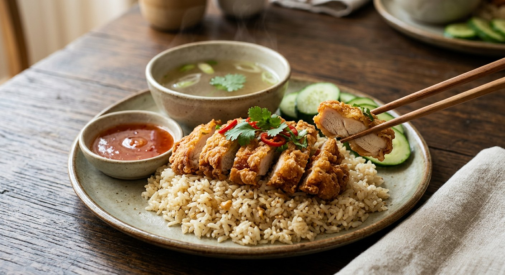

The fried-chicken sibling of khao man gai: the same garlic-ginger chicken-fat rice, under crisp battered chicken, with sweet chilli sauce instead of the fermented-soy dip.

ข้าวมันไก่ทอด is khao man gai's louder sibling. The rice — jasmine cooked with garlic, ginger and rendered chicken fat — is the same ritual. What changes is the chicken: instead of the gentle poach, the meat is marinated, battered and deep-fried, and the sauce switches from the dark fermented-soy tao jiao dip to the sweet chilli sauce that belongs with anything fried. Five Thai sources agree on that skeleton, and argue about almost every detail on top of it.
The home version here comes from a Wongnai home cook: a coriander-root-garlic-peppercorn paste rubbed into boneless thigh, a three-hour fridge marinade, a wet batter of two flours loosened with ice-cold water, and a rice cooker that does the rice work. It is deliberately plain — bought sweet chilli sauce, cucumber, winter melon soup — the way most Thai kitchens actually serve it.
The shop version goes further. ครัวพิศพิไล's batch recipe on TrueID makes everything from scratch: a proper chicken stock simmered with daikon, a rice blend of jasmine and Sao Hai grains, chicken breast double-dredged egg-flour-egg for a thick crust, and a cooked sweet-sour chilli sauce — sugar, vinegar, garlic, red and spur chillies — simmered to a syrup. That sauce is the one component every home recipe quietly outsources to a bottle.
| Thai | English | Amount |
|---|---|---|
| สะโพกไก่เลาะกระดูก | Chicken thigh, boneless | 500 g |
| รากผักชี | Coriander roots | 3 |
| กระเทียมจีน | Garlic | 5 cloves |
| พริกไทยขาวเม็ด | White peppercorns | 1/4 tsp |
| ซอสปรุงรส | Seasoning sauce | 1 tbsp |
| เกลือสมุทร | Sea salt | 1 tsp |
| แป้งสาลีเอนกประสงค์ | Plain flour | 1/2 cup |
| แป้งทอดกรอบ | Crispy frying flour | 1/4 cup |
| น้ำเย็นจัด | Ice-cold water | 3/4 cup |
| น้ำมันพืช | Vegetable oil | for deep-frying |
| ข้าวหอมมะลิเก่า | Aged jasmine rice | 2 cups |
| ขิงฝาน | Ginger, sliced | 5 slices |
| กระเทียมจีน (สำหรับข้าวมัน) | Garlic, for the rice | 5 cloves |
| น้ำตาลทราย | Sugar | 2 tsp |
| พริกไทยป่น | Ground pepper | 1/2 tsp |
| น้ำมันงา | Sesame oil | 1 tsp |
| น้ำมันพืช (สำหรับข้าวมัน) | Vegetable oil, for the rice | 2 tbsp |
| รากผักชี (สำหรับข้าวมัน) | Coriander roots, for the rice | 3 |
| เกลือสมุทร (สำหรับข้าวมัน) | Sea salt, for the rice | 1 tsp |
| กระเทียมเจียว | Fried garlic | 1 tbsp |
| น้ำซุปกระดูกไก่ | Chicken stock | 2 1/2 cups |
| น้ำจิ้มไก่ | Sweet chilli sauce | to serve |
| แตงกวา | Cucumber | to serve |
| น้ำซุปฝักเขียว | Winter melon soup | to serve |
The selling batch (TrueID / ครัวพิศพิไล): 5–6 L water, 1.5 kg chicken carcasses, daikon, rock sugar and stock cubes for the soup; 750 g rice (550 g jasmine + 200 g Sao Hai); 1 kg chicken breast marinated in egg white and salt, double-dredged flour-egg-flour; scratch sauce from 80 g sugar, 1 tbsp vinegar, 2 tbsp each chopped garlic, red and spur chillies, 50 g water. The volcano (Sanook's พี่หมี): rice fried in rendered chicken-skin fat with pandan, then the chicken marinated with sam kloer paste and seasoned flour mix stirred straight in. The KFC home route (Bloggang): a 15-minute salt brine, flour-salt-pepper dredge, egg dip, second dredge, fried at 180 °C, served with bottled Pantainorasingh sweet chilli and ketchup.
The cut. Breast (TrueID's shop batch) or boneless thigh (Wacheerat, Sanook, Flewless) or drumsticks (Bloggang). Thigh is the home consensus; breast is the lean-batch commercial choice.
The coating. Four different systems. A wet batter of plain flour, crispy frying flour and ice-cold water (Wacheerat). The flour mix — plain, crispy and cornflour — stirred straight into the marinated chicken with water (Sanook). A dry double-dredge of flour, egg, flour again (TrueID and Bloggang). Or just crispy frying flour mixed with salt, patted on thick (Flewless).
The marinade. The herb paste — coriander root, garlic, peppercorn, the "sam kloer" trio — plus seasoning sauce (Wacheerat, Sanook). Just egg white and salt (TrueID). Or a fifteen-minute salt brine (Bloggang). The paste is the aromatic school; the others chase texture and salt.
Pre-cooking the chicken. Only Flewless boils the meat two minutes and steams it five — about 70% cooked — before flouring and frying. Everyone else fries the raw marinated chicken. It is a safety shortcut, not the norm.
The sauce. Only TrueID makes the classic cooked sweet-sour chilli sauce from scratch. Flewless dresses with fermented soybean paste and soy sauce. Wacheerat, Sanook and Bloggang all reach for a bought sweet chilli sauce — Mae Pranom or Pantainorasingh — which is the honest home answer.
Rice aromatics. Garlic and ginger everywhere. Pandan only in Sanook and Bloggang. Sesame oil only in Wacheerat. Olive oil in the two farang-kitchen sources (Flewless, Bloggang). TrueID and Flewless blend jasmine with the cheaper Sao Hai grain — the shop trick for fragrance at bulk prices.
The fat. Chicken skin rendered in the rice pot (TrueID, Sanook, Bloggang) against plain oil (Wacheerat, Flewless). The rendered-skin route is the traditional one.
Frying heat. "Very hot" (TrueID), medium (Wacheerat, Sanook), medium-low (Flewless), or a stated 180 °C (Bloggang). The batter versions tolerate medium; the dry-dredge versions want the heat.
This recipe is translated from the following Thai-language sources. Where they disagree, we've said so.
1. Wongnai (Wacheerat Kangsanant) — "สูตร ข้าวมันไก่ทอด" (the recipe used here) — wongnai.com
2. TrueID (ครัวพิศพิไล) — "ทำขายกำไรดี! สูตรข้าวมันไก่ทอด ไก่กรอบ ข้าวอร่อย น้ำจิ้มดี เปิดร้านได้เลย" (the from-scratch shop batch) — food.trueid.net
3. Sanook — "วิธีทำ ข้าวมันไก่ทอดภูเขาไฟ ไก่กรอบนอกนุ่มใน ข้าวมันหอมนุ่ม" (the volcano version) — sanook.com
4. Wongnai (冰Flewless) — "สูตร ข้าวมันไก่ทอด" (the par-cooked chicken version) — wongnai.com
5. Bloggang (We Are From Belgium) — "ข้าวมันไก่ & ข้าวมันไก่ทอด (แบบเคเอฟซี) : เมนูไก่ ๆ ฉบับไกลบ้าน" (the expat-home KFC-style version, with its linked ไก่ทอดคล้าย KFC recipe) — bloggang.com